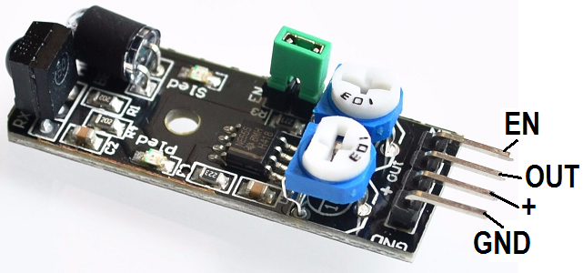
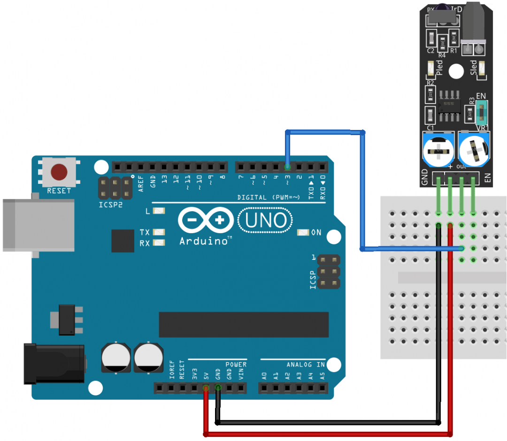

Оптический датчик препятствия KY-032
Оптический датчик препятствия KY-032 прекрасно подойдет роботу или машинке на Arduino для объезда препятствий. На модуле расположен инфракрасный светодиод с линзой, который постоянно включен и излучает узкий пучок ИК излучения. Детектором отраженного сигнала от препятствия служит фотодиод или фототранзистор. Также на печатной плате расположен светодиод для индикации и два подстроечных резистора для настройки чувствительности датчика KY-032.
Устройство излучает инфракрасный луч с частотой 38 кГц, который принимается приемником на плате. При приближении предмета к сенсору (необходимое расстояние регулируется потенциометром на модуле) на выходе платы «OUT» появляется низкий уровень напряжения и включается встроенный светодиод. Дальность срабатывания (чувствительность) датчика препятствия регулируется от 2 до 40 сантиметров.
Для подключения датчика обнаружения препятствий к Arduino имеется три или четыре контакта. Два контакта на модуле KY-032 служат для питания от 5 В. Еще два контакта формируют импульсы для платы Arduino.
Устройство можно включать и выключать удаленно, для этого нужно заранее снять перемычку “EN” и подавать на контакт “EN” (находится рядом с контактом «OUT») управляющий сигнал (логический ноль или единицу) для этого.
Переменным резистором R5 (расположен рядом перемычкой) регулируется мощность инфракрасного излучения светодиода, таким образом можно настраивать дальность срабатывания датчика. Переменным резистором R6 регулируется частота излучения инфракрасного светодиода (по умолчанию – 38 кГц).
Технические характеристики модуля KY-032:
- дальность срабатывания — 2-40 см;
- эффективный угол обзора — 35°;
- напряжение питания — 3,3...5В;
- ток потребления в рабочем режиме — 20 мА;
- ток потребления в дежурном режиме — 2 мА;
- размеры (длина × ширина) — 40 × 15 мм;
- рабочая температура — -10 – +50°C.

Назначение выводов представлено в таблице 1.
Таблица 1
| Контакт | Назначение |
|---|---|
| EN | Enable – подать “+5 В” для включения модуля, для выключения подать "GND"
(для управления с помощью этого контакта должна быть снята перемычка "EN" на плате) |
| OUT | Выход данных |
| + | +5В |
| GND | Общий (GND) |

Источники
umnyjdomik.ru - "KY-032" – модуль с инфракрасным датчиком обнаружения препятствий для ARDUINO
роботехника18.рф - Как подключить датчик препятствия к Ардуино.